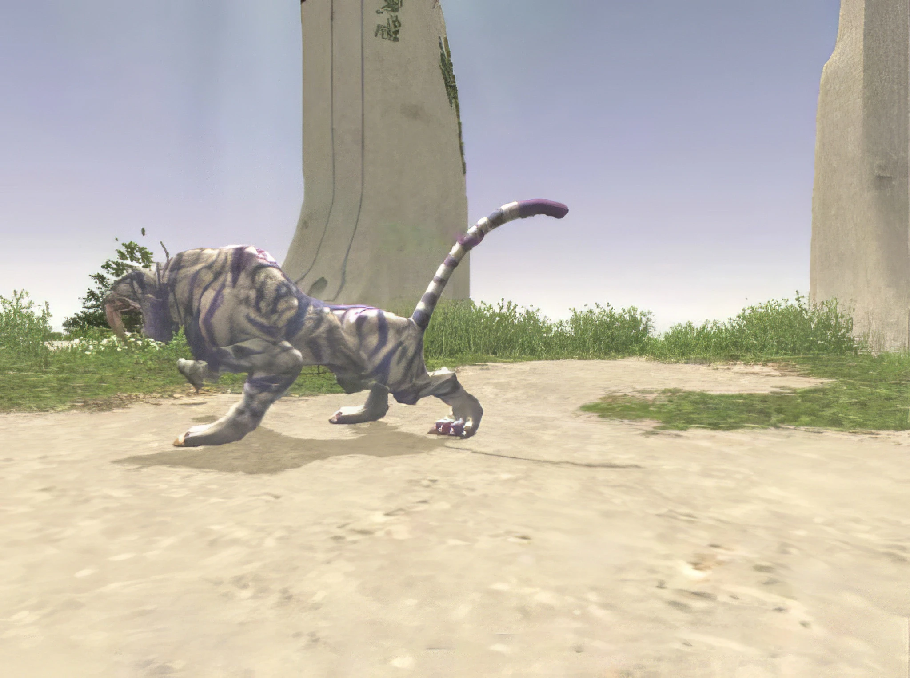

Level 75 reference · Zenith rules
|
Job: Thief Notorious Monster |
 Image source |


| Zone | Level | Drops | Steal | Spawns | Notes | ||||||
|---|---|---|---|---|---|---|---|---|---|---|---|
| Ru'Aun Gardens | 88-90 | 1 | A, H
| ||||||||
Shrine of Ru'Avitau
|
1 | A, H
| |||||||||
|
HP = Detects Low HP; M = Detects Magic; Sc = Follows by Scent; T(S) = True-sight; T(H) = True-hearing JA = Detects job abilities; WS = Detects weaponskills; Z(D) = Asleep in Daytime; Z(N) = Asleep at Nighttime | |||||||||||

Notes:
- Uses the attacks:
- Tiger job ablilities
- Perfect Dodge
- Additional Effect: Light Damage
- Banish IV
- Banishga III
- Dia III
- Diaga III
- Holy
- Paralyga
 Image source Image sourceNotes A:
|
 Image source Image sourceNotes B:
|


Dialogue
Dialogue when appears
Byakko: "I am Byakko, Divine Guardian of the West. You mortals are not worthy to feel my fangs, but perhaps you might provide a sparse few moments of entertainment."
Dialogue when defeated
Byakko: "I had not known that mortals of such strength and courage existed! I will remember your name, child of Vana'diel."
Adapted from Eden Wiki: Byakko · Contributors and history · CC BY-SA 4.0. Revision 1970. Layout, links and optional background text adapted for Zenith.